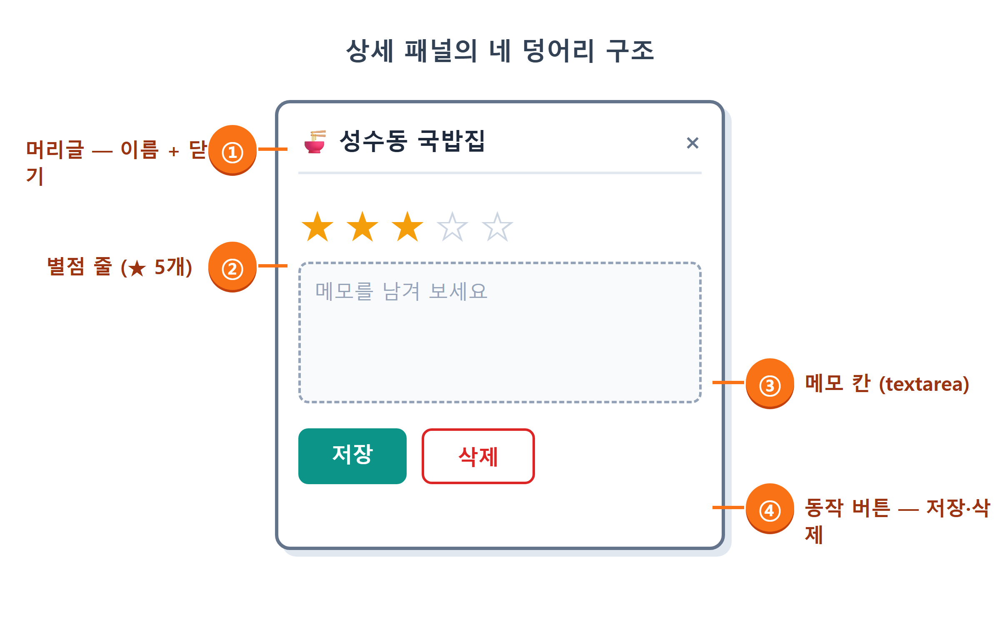
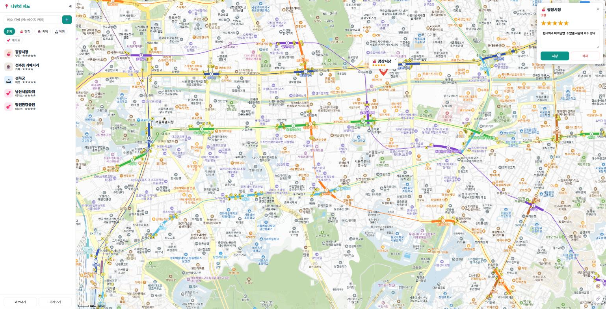
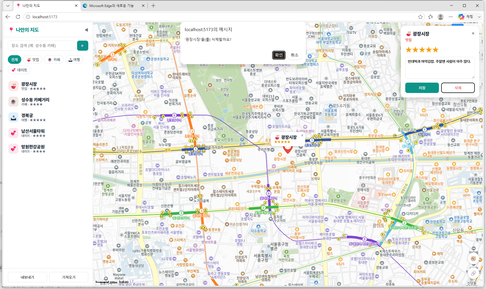
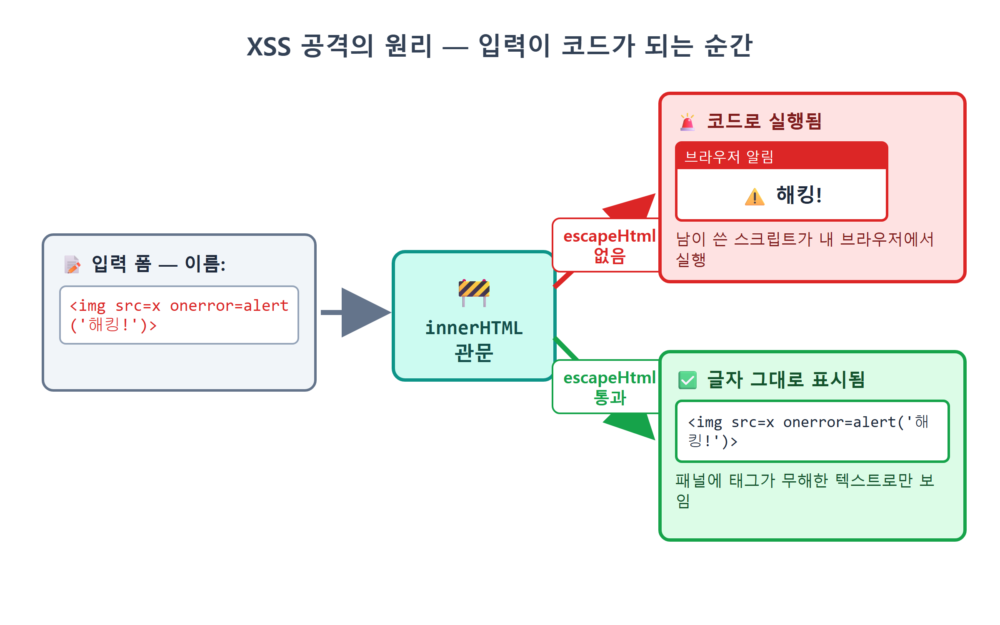
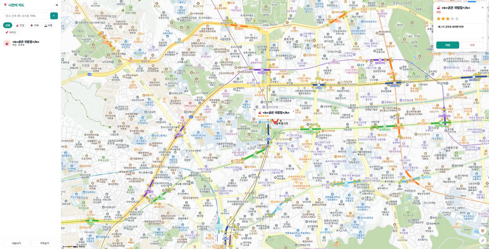

19장 상세 패널¶
이 장에서 배우는 것
- 장소 하나를 자세히 보고 편집하는 상세 패널 UI를 만듭니다
- 별점 버튼(1~5)으로 평점을 매기고, 클릭 즉시 화면에 반영합니다
- 메모를 입력하고 저장하는 흐름과
store.update의 쓰임새를 익힙니다 - 삭제 전에
confirm으로 한 번 더 물어보는 이유를 배웁니다 - XSS 공격이 무엇인지 직접 실험해 보고,
escapeHtml로 막는 법을 배웁니다 — 이 책의 첫 보안 수업입니다
드디어 퍼즐의 마지막 조각입니다. 16장에서 장소를 추가했고, 17장에서 localStorage에 저장했고, 18장에서 사이드바 목록으로 훑어볼 수 있게 됐습니다. 그런데 아직 못 하는 일이 두 가지 남아 있습니다. 저장해 둔 장소의 별점과 메모를 고치는 일, 그리고 이제 안 가는 가게를 지우는 일입니다. 프로그래머들은 데이터 다루기의 네 가지 기본기를 CRUD라고 부릅니다. Create(만들기)·Read(읽기)·Update(고치기)·Delete(지우기)의 머리글자죠. 우리는 C와 R을 끝냈고, 이번 장에서 U와 D를 완성합니다.
이 두 기능이 살 집으로 우리는 상세 패널을 만듭니다. 마커나 목록에서 장소를 고르면 지도 오른쪽 위에 카드가 스르륵 나타나서, 그 장소의 이름·카테고리·별점·메모를 보여 주고 그 자리에서 바로 편집까지 하게 해 주는 화면입니다. 카카오맵에서 가게를 눌렀을 때 옆에 뜨는 상세 화면의 미니 버전이라고 생각하면 됩니다. 그리고 이 장의 끝에는 특별한 손님이 기다리고 있습니다. 15장에서 "19장에서 제대로 배운다"고 미뤄 뒀던 escapeHtml의 정체, 즉 XSS라는 웹 보안의 고전을 직접 실험으로 만나 봅니다. 여러분의 첫 해킹(과 방어) 실습입니다.
19.1 상세 패널 설계 — 어디에, 무엇을¶
코드를 시키기 전에 늘 하던 대로 그림부터 그려 봅시다. 상세 패널에 들어갈 내용은 네 덩어리입니다.
- 머리글 — 카테고리 이모지 + 장소 이름, 그리고 닫기(×) 버튼
- 별점 줄 — ★ 버튼 다섯 개. 현재 별점만큼 노랗게 칠해져 있고, 누르면 그 값으로 바뀝니다
- 메모 칸 — 여러 줄 입력이 되는
textarea - 동작 버튼 — 저장, 그리고 빨간 글씨의 삭제

자리는 지도 오른쪽 위가 좋습니다. 왼쪽은 사이드바가 차지하고 있으니, 반대편에 띄우면 목록과 상세를 나란히 놓고 볼 수 있습니다. 13장의 말풍선처럼 지도 위에 겹쳐 뜨는 요소이므로 position: absolute를 쓰고, 평소에는 hidden 속성으로 숨겨 둡니다. 15장의 검색 결과 목록과 똑같은 작전입니다. 화면 요소는 상태에 따라 나타나고 사라진다 — 이제 익숙한 리듬이죠.
그런데 한 가지 미리 결정할 것이 있습니다. 패널의 속 내용물을 HTML에 미리 다 써 둘까요, 아니면 그때그때 자바스크립트로 만들어 넣을까요? 검색 결과 목록은 후자였습니다. 상세 패널도 후자가 맞습니다. 어떤 장소가 클릭될지, 별점이 몇 개일지, 메모가 뭐라고 적혀 있을지는 클릭되는 순간에야 알 수 있으니까요. 그래서 HTML에는 빈 그릇만 두고, 열 때마다 내용을 새로 그려 넣는 방식으로 갑니다. Claude Code에게 그릇과 스타일부터 부탁합시다.
🗣 이렇게 시키세요
index.html의 지도 영역 안에 상세 패널 그릇을 추가해줘.
<section id="detail-panel" hidden></section>하나면 되고 내용은 자바스크립트로 채울 거야. style.css에는 지도 오른쪽 위(right/top 12px)에 뜨는 폭 280px 흰색 카드로 스타일을 잡아줘. 둥근 모서리와 그림자로 말풍선·다이얼로그와 톤을 맞춰줘.
Claude Code가 index.html에 넣은 것은 정말로 이 한 줄입니다.
style.css에 추가된 스타일의 핵심은 이렇습니다.
#detail-panel {
position: absolute; right: 12px; top: 12px; z-index: 25;
width: 280px; background: #fff; border-radius: 14px;
box-shadow: 0 6px 24px rgb(0 0 0 / 0.18); padding: 16px;
}
.detail-stars .star {
border: none; background: none; font-size: 24px; cursor: pointer; color: #d1d5db;
}
.detail-stars .star.on { color: #f59e0b; }
#detail-memo {
width: 100%; margin: 10px 0; padding: 8px; border: 1px solid var(--line);
border-radius: 8px; font-family: inherit; font-size: 13px; resize: vertical;
}
button.primary { background: var(--brand); border-color: var(--brand); color: #fff; }
button.danger { color: #dc2626; border-color: #fecaca; }
눈여겨볼 곳은 별점입니다. .star는 평소 회색(#d1d5db)이고, on 클래스가 붙은 것만 노란색(#f59e0b)이 됩니다. 14장 필터 버튼의 active 토글과 똑같은 수법이죠. 모양은 CSS가, 켜고 끄기는 클래스가 담당합니다. 삭제 버튼에는 danger라는 클래스로 빨간 계열을 입혔습니다. 위험한 버튼은 빨갛게 — 전 세계 UI의 공용어입니다.
19.2 openDetail — 패널을 그리는 함수¶
이제 두뇌 차례입니다. 우리 앱의 규칙대로 상세 패널도 파일 하나에 담습니다. 이름은 src/detail.js. 요구사항을 정리해서 통째로 시켜 봅시다.
🗣 이렇게 시키세요
src/detail.js를 새로 만들어줘. openDetail(id)과 closeDetail을 export하고, openDetail은 store.get(id)으로 장소를 찾아 #detail-panel 안에 카테고리 이모지+이름 머리글(닫기 × 버튼 포함), 별 버튼 5개(현재 별점만큼 on 클래스), 메모 textarea, 저장/삭제 버튼을 그려줘. 별을 누르면 store.update로 rating을 바꾸고, 저장은 memo를 update하고 toast를 띄우고, 삭제는 confirm으로 물어본 뒤 store.remove 해줘. 이름과 메모는 mapView.js의 escapeHtml로 감싸줘. 그리고 main.js에서 마커 클릭과 사이드바 목록 클릭이 openDetail을 부르게 연결해줘.
Claude Code가 만들어 준 src/detail.js를 세 토막으로 나눠 읽겠습니다. 먼저 패널을 그리는 앞부분입니다.
// src/detail.js — 상세 패널: 별점·메모 편집, 삭제
import { store } from './store.js';
import { categoryOf } from './categories.js';
import { escapeHtml } from './mapView.js';
import { toast } from './sidebar.js';
let currentId = null;
export function openDetail(id) {
const place = store.get(id);
if (!place) return;
currentId = id;
const panel = document.getElementById('detail-panel');
const cat = categoryOf(place.category);
panel.hidden = false;
panel.innerHTML = `
<header>
<h2>${cat.emoji} ${escapeHtml(place.name)}</h2>
<button id="detail-close" title="닫기">×</button>
</header>
<p class="detail-cat" style="color:${cat.color}">${cat.label}</p>
<div class="detail-stars" id="detail-stars">
${[1, 2, 3, 4, 5]
.map((n) => `<button class="star ${n <= (place.rating || 0) ? 'on' : ''}" data-n="${n}">★</button>`)
.join('')}
</div>
<textarea id="detail-memo" rows="4" placeholder="메모를 남겨 보세요">${escapeHtml(place.memo || '')}</textarea>
<div class="detail-actions">
<button id="detail-save" class="primary">저장</button>
<button id="detail-delete" class="danger">삭제</button>
</div>`;
첫 줄부터 봅시다. store.get(id)으로 장소 객체를 찾고, 없으면 조용히 반환합니다. 15장에서 배운 문지기 검사입니다. 이미 삭제된 장소의 id가 어디선가 굴러들어 와도 앱이 깨지지 않게 막아 줍니다. 그다음 panel.hidden = false로 그릇을 드러내고, innerHTML에 템플릿 문자열로 내용 전체를 한 번에 그려 넣습니다. 12장 이후 계속 써 온 데이터 → HTML 문자열 패턴 그대로입니다.
가장 재미있는 줄은 별점입니다.
[1, 2, 3, 4, 5].map((n) => `<button class="star ${n <= (place.rating || 0) ? 'on' : ''}" ...>★</button>`)
<button class="star">★</button>를 다섯 번 복사해 붙이는 대신, [1, 2, 3, 4, 5] 배열을 map으로 돌려 다섯 개를 찍어 냅니다. 각 버튼은 자기 번호 n을 알고 있고, n <= place.rating이면, 그러니까 자기 번호가 현재 별점 이하이면 on 클래스를 답니다. 별점이 3이면 1·2·3번 별에만 on이 붙어 노랗게 빛나는 것이죠. place.rating || 0은 별점이 아직 없는(=undefined) 장소를 0점으로 취급하는 안전장치입니다. 삼항 연산자1 조건 ? 참일때 : 거짓일때는 이렇게 클래스 이름을 골라 넣을 때 특히 자주 만나게 됩니다.
data-n="${n}"도 눈에 익지 않나요? 15장 검색 결과의 data-i와 같은 번호표입니다. 잠시 뒤 클릭된 별이 몇 번째인지 알아내는 데 씁니다. 그리고 이름과 메모에 씌워진 escapeHtml — 아직은 "외부 문자열엔 이걸 씌운다"는 주문으로만 알고 넘어가세요. 19.5절에서 이 주문을 안 외우면 무슨 일이 벌어지는지 눈으로 보게 됩니다.

19.3 별점 버튼 — 클릭하면 다시 그린다¶
innerHTML로 그리기가 끝나면, 이어서 방금 만든 버튼들에 생명을 불어넣습니다. openDetail의 뒷부분입니다.
panel.querySelector('#detail-close').addEventListener('click', closeDetail);
panel.querySelectorAll('.star').forEach((btn) => {
btn.addEventListener('click', () => {
const n = Number(btn.dataset.n);
// 다시 그리기 전에 쓰던 메모를 잃지 않게 보관한다
const draft = panel.querySelector('#detail-memo').value;
store.update(id, { rating: n });
openDetail(id); // 다시 그려서 별 반영
panel.querySelector('#detail-memo').value = draft;
});
});
별 버튼 다섯 개를 querySelectorAll로 모아 하나씩 클릭 리스너를 답니다. 클릭되면 번호표(btn.dataset.n)를 읽어 몇 번째 별인지 알아내고 — dataset 값은 언제나 문자열이므로 Number()로 변환하는 습관, 15장에서 배웠죠 — store.update(id, { rating: n })로 저장소에 새 별점을 기록합니다. 17장에서 만든 update는 그 장소 객체에 변경분만 덮어쓰고 save()를 부르니, localStorage 저장까지 이 한 줄로 끝납니다.
그런데 뒤쪽의 openDetail(id)가 묘합니다. 지금 실행 중인 함수를 자기가 다시 부릅니다. 왜일까요? 별점은 방금 3에서 5로 바뀌었는데, 화면의 별들은 여전히 3개만 노란 상태이기 때문입니다. 노란 별을 두 개 더 칠하는 코드를 조심조심 짤 수도 있겠지만, 그보다 훨씬 단순한 방법이 있습니다. 패널을 통째로 다시 그리는 것입니다. openDetail은 어차피 "현재 데이터를 읽어 패널을 그리는 함수"이니, 데이터를 바꾼 뒤 한 번 더 부르면 바뀐 별점이 반영된 새 패널이 나타납니다. 화면을 요리조리 수선하지 않고 상태를 바꾸고 → 다시 그린다. 14장 필터에서 익힌 단방향 흐름이 여기서도 반복됩니다. 요즘 유행하는 React 같은 프레임워크의 핵심 사상도 사실 이것과 똑같습니다. 우리는 그걸 바닐라 자바스크립트로 손수 해 보고 있는 셈입니다.
그리고 openDetail(id)를 앞뒤로 감싼 두 줄, draft를 보관했다가 되돌려 놓는 코드가 이 방식의 비용을 계산한 흔적입니다. 패널을 통째로 다시 그린다는 것은 textarea도 새로 만든다는 뜻입니다. 만약 메모 칸에 저장 안 한 글을 쓰던 중에 별을 눌렀다면, 새 textarea에는 저장된 옛 메모가 들어가면서 쓰던 글이 증발해 버립니다. 열심히 쓴 후기 세 줄이 별 한 번 눌렀다고 사라진다면 사용자는 배신감을 느끼겠죠. 그래서 다시 그리기 전에 textarea의 현재 값을 draft 변수에 피신시켜 두고, 다시 그린 후에 그 값을 새 textarea에 되돌려 놓습니다. 철거 전에 귀중품부터 챙기는 것입니다. "통째로 다시 그리기"의 단순함은 지키면서, 그 부작용만 두 줄로 막은 절충안입니다.
한 가지 더 좋은 일이 공짜로 따라옵니다. store.update가 save()를 부르면, 18장에서 심어 둔 구독 패턴이 발동합니다. main.js의 store.subscribe(rerender) 덕분에 지도의 마커와 말풍선도 자동으로 다시 그려지죠. 말풍선에는 별점이 ★★★☆☆처럼 표시되고 있었는데(13장), 상세 패널에서 별을 바꾸는 순간 말풍선의 별도 함께 바뀝니다. 우리가 이번 장에서 그 연동 코드를 한 줄도 안 썼는데도요. 데이터의 길목 한 곳(save)에 방송국을 세워 둔 설계가 이렇게 계속 이자를 쳐서 돌아옵니다.

💡 팁
"바꾸고 다시 그리기"를 쓰는 화면에서는 입력 중이던 값이 항상 요주의 대상입니다. 우리는 textarea 하나뿐이라 draft 두 줄로 끝났지만, 입력칸이 여러 개라면 챙길 짐도 늘어납니다. React 같은 프레임워크가 입력 상태를 별도로 관리하는 이유가 바로 이 문제 때문입니다. AI가 짜 준 "다시 그리기" 코드를 검토할 때는 "다시 그리는 순간 사용자가 쓰던 값이 날아가지 않아?"라고 한 번 물어보는 습관을 들이세요. 연습 문제에서 이 두 줄을 직접 실험해 봅니다.
19.4 메모 저장, 그리고 confirm으로 묻는 삭제¶
남은 두 버튼입니다. 먼저 저장 버튼.
panel.querySelector('#detail-save').addEventListener('click', () => {
store.update(id, { memo: panel.querySelector('#detail-memo').value });
toast('저장했습니다.');
});
textarea의 현재 값을 읽어 store.update로 memo에 덮어쓰고, toast로 "저장했습니다."를 잠깐 띄웁니다. 이 토스트 한 줄을 우습게 보면 안 됩니다. 저장은 눈에 보이는 변화가 없는 동작이라, 알림이 없으면 사용자는 "눌린 건가?" 하며 버튼을 세 번쯤 연타하게 됩니다. 소리 없는 동작에는 반드시 피드백을 — 좋은 UI의 기본 예절입니다.
다음은 삭제 버튼입니다. 여기엔 처음 보는 함수가 등장합니다.
panel.querySelector('#detail-delete').addEventListener('click', () => {
if (confirm(`'${place.name}'을(를) 삭제할까요?`)) {
store.remove(id);
closeDetail();
toast('삭제했습니다.');
}
});
confirm은 브라우저가 기본으로 제공하는 확인 다이얼로그입니다. 호출하면 메시지와 [확인]·[취소] 버튼이 있는 작은 창이 뜨고, 사용자가 답할 때까지 코드 실행이 멈춥니다. 확인을 누르면 true, 취소를 누르면 false가 돌아오죠. 그래서 if (confirm(...)) 안에 삭제 코드를 넣으면, 취소를 누른 경우엔 아무 일도 일어나지 않습니다.
왜 이렇게까지 할까요? 별점 변경은 다시 누르면 그만이고, 메모도 다시 쓰면 됩니다. 하지만 삭제는 돌이킬 수 없습니다. store.remove가 실행되고 save()가 localStorage를 덮어쓰는 순간, 그 장소는 이 세상 어디에도 없습니다. 실행 취소(Ctrl+Z) 같은 것도 우리 앱엔 없죠. 이렇게 되돌릴 수 없는 동작 앞에서는 반드시 한 번 더 묻는다 — 이것도 만국 공통의 UI 관례입니다. 파일을 지울 때, 회원 탈퇴를 할 때, 여러분이 수없이 만나 온 "정말 삭제하시겠습니까?"가 전부 이 confirm의 친척들입니다. 메시지에 place.name을 넣은 것도 의도적입니다. "삭제할까요?"보다 "'성수동 국밥집'을(를) 삭제할까요?"가 실수를 훨씬 잘 막아 줍니다. 내가 무엇을 지우려는 건지 눈으로 확인시켜 주니까요.
확인을 눌렀다면 세 줄이 차례로 실행됩니다. store.remove(id)로 데이터에서 지우고 — 구독 패턴이 마커와 목록도 알아서 치워 줍니다 — closeDetail()로 이제 주인 잃은 패널을 닫고, 토스트로 결과를 알립니다. closeDetail은 파일 끝에 있는 단출한 함수입니다.
export function closeDetail() {
const panel = document.getElementById('detail-panel');
panel.hidden = true;
currentId = null;
}
hidden을 되돌리고, "지금 열려 있는 장소" 기억(currentId)을 비웁니다. 열 때 currentId = id로 적어 두고 닫을 때 지우는 이 변수는, 나중에 다른 모듈이 "지금 상세 패널에 어떤 장소가 떠 있지?"를 물어볼 때를 위한 장부입니다.

마지막으로 연결입니다. Claude Code가 main.js에서 두 곳을 openDetail로 이어 붙였습니다.
import { openDetail } from './detail.js';
// ...
setMarkerClickHandler((id) => openDetail(id)); // 마커 클릭 → 상세
initSidebar({
onSelectPlace: (id) => {
const p = store.get(id);
if (p) {
focusPlace(p); // 지도 이동 + 말풍선 (18장)
openDetail(id); // 상세 패널도 함께
}
},
// ...
});
마커를 클릭해도, 사이드바 목록을 클릭해도 같은 상세 패널이 열립니다. 입구는 여러 개, 함수는 하나. 16장에서 추가 다이얼로그를 재사용했던 것과 같은 원칙입니다.
19.5 XSS — 여러분의 첫 보안 실험¶
이제 미뤄 둔 숙제를 풀 시간입니다. 15장부터 코드 곳곳에 등장한 escapeHtml, 도대체 왜 씌우는 걸까요? 백문이 불여일견, 직접 공격을 해 보면서 배웁시다.
우리 앱에서 사용자가 입력한 문자열이 innerHTML로 들어가는 곳을 떠올려 보세요. 장소 이름과 메모입니다. 16장의 추가 다이얼로그에서 이름을 아무거나 적을 수 있었죠. 그럼 이름에 글자 대신 HTML 태그를 적으면 어떻게 될까요? 지도를 클릭해 추가 다이얼로그를 열고, 이름 칸에 이렇게 넣어 보세요.
저장한 뒤 상세 패널을 열어 봅니다. 우리 앱에서는 <b>굵은 국밥집</b>이라는 글자가 꺾쇠까지 그대로 보입니다. escapeHtml이 일을 한 것입니다. 그런데 만약 이 안전장치가 없었다면? innerHTML은 문자열 속 <b>를 글자가 아니라 "굵게 태그"로 해석해서, 패널에는 굵은 국밥집이라고 렌더링됐을 겁니다. 사용자가 입력한 문자열이 우리 앱의 HTML 구조에 끼어든 것이죠.
"글씨 좀 굵어지는 게 뭐 어때서?"라고 생각할 수 있습니다. 문제는 태그로 할 수 있는 일이 굵은 글씨 정도가 아니라는 데 있습니다. 이런 이름은 어떨까요.
깨진 이미지 태그입니다. 브라우저는 x라는 이미지를 못 찾으니 onerror에 적힌 자바스크립트를 실행합니다. escapeHtml이 없는 앱이라면, 이 "이름"의 장소를 여는 순간 경고창이 뜹니다. 장소 이름을 그렸을 뿐인데 남이 쓴 코드가 내 브라우저에서 돌아간 것입니다. 이런 공격을 XSS(Cross-Site Scripting, 교차 사이트 스크립팅)2라고 부릅니다. 웹에서 가장 오래되고 가장 흔한 공격 중 하나입니다.

"내 지도에 내가 이상한 이름을 넣어 봤자 나만 당하는 거 아닌가요?" 좋은 질문입니다. 지금 우리 앱은 데이터가 내 브라우저 안에만 있으니 실제 피해자는 나뿐입니다. 하지만 세 가지를 생각해 보세요. 첫째, 17장에서 만든 가져오기 기능으로 남이 준 JSON 파일을 불러올 수 있습니다. 그 파일 속 장소 이름에 공격 코드가 심겨 있다면? 둘째, 15장의 검색 결과도 엄밀히는 바깥에서 온 데이터입니다. 카카오를 믿지만, 원칙적으로 외부 데이터는 전부 의심 대상입니다. 셋째, 언젠가 이 앱에 서버를 붙여 여러 사람이 장소를 공유하게 되면, 한 명이 심은 공격 코드가 모든 방문자의 브라우저에서 실행됩니다. 진짜 세상의 XSS 사고는 대부분 이런 식으로 터집니다. 방명록에, 댓글에, 닉네임에 심긴 스크립트가 그 페이지를 여는 모든 사람을 공격하는 것이죠.
참고로 우리 앱의 방어는 이스케이프 한 겹만이 아닙니다. 17장에서 store에 세운 검문소 normalize를 기억하시나요? 가져오기 파일이 들어오면 이름·좌표만이 아니라 id까지 검사해서, 영문·숫자·밑줄·하이픈으로만 된 id가 아니면 안전한 새 id로 갈아 끼웁니다. id는 화면에 보이는 값이 아니라서 방심하기 쉽지만, data-id="${p.id}"처럼 HTML 속성에 끼워 넣는 코드가 어딘가 생기는 순간 공격 통로가 될 수 있거든요. 들어올 때 검증하고(normalize), 나갈 때 이스케이프한다(escapeHtml) — 문과 창문에 각각 잠금장치를 다는 이 이중 방어가 보안의 기본 자세입니다. 한쪽을 깜빡해도 다른 쪽이 버텨 주니까요.
그래서 원칙은 이렇게 외웁니다. 사용자(또는 외부)가 만든 문자열을 innerHTML에 넣을 때는 반드시 이스케이프한다. 우리의 방패 escapeHtml은 mapView.js에 있는 여섯 줄짜리 함수입니다.
// src/mapView.js — HTML 특수문자를 무해한 표기로 바꾼다
export function escapeHtml(s = '') {
return s.replace(/[&<>"']/g, (c) => ({
'&': '&', '<': '<', '>': '>', '"': '"', "'": ''',
})[c]);
}
정규식 /[&<>"']/g로 HTML에서 특별한 의미를 갖는 다섯 글자를 전부(g) 찾아, 각각을 HTML 엔티티라는 무해한 표기로 바꿉니다. <는 <로, >는 >로 바뀌는 식입니다. 브라우저는 <를 만나면 태그 시작이 아니라 "그냥 < 라는 글자"로 그립니다. 태그의 이빨을 뽑아 버리는 것이죠.
| 원래 글자 | 바뀐 표기 | HTML에서의 원래 의미 |
|---|---|---|
& |
& |
엔티티의 시작 |
< |
< |
태그 열기 |
> |
> |
태그 닫기 |
" |
" |
속성값 따옴표 |
' |
' |
속성값 따옴표 |
이제 15장의 문장을 완성할 수 있습니다. 검색 결과의 place_name에, 상세 패널의 place.name과 place.memo에, 13장 말풍선의 이름에 — 외부에서 온 문자열이 innerHTML을 통과하는 모든 길목에 우리 앱은 이미 이 방패를 세워 뒀습니다. 여러분이 아까 <b>굵은 국밥집</b>을 넣었을 때 태그가 글자 그대로 보인 이유입니다.

⚠️ 주의
textarea 안에 값을 넣을 때도 이스케이프가 필요합니다. "textarea는 입력칸이니까 괜찮겠지"라고 생각하기 쉽지만, 메모에 </textarea>라는 문자열이 들어 있으면 브라우저가 입력칸을 거기서 닫아 버리고 나머지를 HTML로 해석합니다. 우리 코드가 ${escapeHtml(place.memo || '')}로 감싼 이유입니다. 규칙은 예외 없이: innerHTML로 들어가는 외부 문자열은 전부 이스케이프.
💡 팁
이스케이프 말고 근본적으로 안전한 길도 있습니다. el.textContent = place.name처럼 textContent에 넣으면 브라우저가 처음부터 순수한 글자로만 취급하므로 XSS가 원천 차단됩니다. 다만 우리처럼 템플릿 문자열로 HTML 구조를 통째로 조립할 때는 쓸 수 없어서, 구조는 innerHTML로 만들되 끼워 넣는 값마다 escapeHtml을 씌우는 절충안을 택한 것입니다. 규모가 커지면 이 문제를 프레임워크(React 등)가 자동으로 처리해 줍니다. AI가 짜 준 코드를 검토할 때 "사용자 입력이 innerHTML에 그대로 들어가는 곳은 없어?"라고 물어보는 습관을 들이세요. 바이브코딩 시대에도 보안 검토의 최종 책임자는 사람입니다.
19.6 실행 확인¶
전체 흐름을 점검해 봅시다. 브라우저를 새로고침하고 순서대로 해 보세요.
- 마커를 클릭 — 말풍선과 함께 오른쪽 위에 상세 패널이 열립니다.
- 별 다섯 번째를 클릭 — 별 5개가 노래지고, 말풍선의 별도 함께 바뀝니다.
- 메모를 적고 저장 — "저장했습니다." 토스트가 뜹니다. 새로고침해도 메모가 남아 있는지 꼭 확인하세요(17장의 localStorage가 일하고 있다는 증거입니다).
- 사이드바 목록에서 다른 장소 클릭 — 지도가 이동하며 패널 내용이 그 장소로 바뀝니다.
- 삭제 버튼 → 취소 — 아무 일도 없습니다. 다시 삭제 → 확인 — 패널이 닫히고 마커와 목록에서도 사라집니다.
- 지도를 클릭해 이름이
<b>테스트</b>인 장소를 추가 — 상세 패널과 말풍선에 태그가 글자 그대로 보이면, 여러분의 방패는 정상 작동 중입니다.
여기까지 됐다면 축하합니다. 추가·저장·목록·상세·삭제 — CRUD가 완성됐습니다. PLAN의 마일스톤 M5 달성입니다. 여러분의 지도는 이제 남의 데모가 아니라, 매일 열어 쓸 수 있는 진짜 도구입니다.
19.7 마무리¶
📌 핵심 요약
- 상세 패널은 빈 그릇(
<section id="detail-panel" hidden>)만 HTML에 두고,openDetail(id)이 열릴 때마다 현재 데이터로 내용을 다시 그립니다. - 별점은
[1,2,3,4,5].map(...)으로 버튼 5개를 찍어 내고,n <= rating인 별에만on클래스를 붙여 색을 켭니다. 클릭하면store.update후openDetail을 다시 불러 상태 → 다시 그리기로 반영하되, 쓰던 메모(draft)는 다시 그리기 전에 보관했다가 되돌려 놓습니다. store.update가save()를 부르는 순간 구독 패턴이 발동해, 말풍선·목록 등 다른 화면도 자동으로 갱신됩니다.- 되돌릴 수 없는 삭제 앞에서는
confirm으로 한 번 더 묻고, 메시지에 장소 이름을 넣어 무엇을 지우는지 보여 줍니다. - XSS는 사용자 입력 속 태그가
innerHTML에서 코드로 해석되는 공격입니다. 외부 문자열이 innerHTML로 들어가는 모든 길목에escapeHtml(&, <, >, ", ' 다섯 글자를 엔티티로 치환)을 씌워 막습니다.
🤔 생각해보기
Q1. 별 클릭 후 노란 별 개수만 고치는 대신 openDetail(id)로 패널을 통째로 다시 그리는 방식의 장점과 단점을 각각 한 가지씩 적어 보세요.
✍️ ________
✍️ ________
Q2. 삭제에는 confirm을 씌우면서 별점 변경에는 씌우지 않은 이유는 무엇일까요? "되돌릴 수 있는가"를 기준으로 설명해 보세요.
✍️ ________
✍️ ________
✏️ 연습 문제
- 장소 이름을
<img src=x onerror="alert('테스트')">로 저장해 보고, 경고창이 뜨지 않는 이유를 escapeHtml의 다섯 글자 표에서 찾아 설명해 보세요. (확인 후 그 장소는 삭제!) - 별을 다시 누르면 0점으로 돌아가는 "별점 취소" 기능을 Claude Code에게 시켜 보세요. (힌트: 클릭한
n이 현재rating과 같으면 0으로) - 별 클릭 리스너에서
draft를 보관·복원하는 두 줄을 잠시 주석 처리한 뒤, 메모에 저장 안 한 글이 있는 채로 별을 눌러 보세요. 글이 사라지는 문제를 재현했다면 주석을 되돌려 두 줄의 역할을 확인하세요. confirm메시지를 "삭제하면 되돌릴 수 없습니다. 계속할까요?"로 바꿔 보고, 원래 메시지와 어느 쪽이 더 실수를 잘 막아 줄지 생각해 보세요.
🔎 더 찾아보기
DOMPurify— 태그를 일부 허용하면서도 위험한 것만 걸러 주는 유명 XSS 방어 라이브러리. 사용자에게 서식 있는 입력을 허용할 때 씁니다.Content-Security-Policy— 브라우저에게 "이 출처의 스크립트만 실행해"라고 선언하는 HTTP 헤더. XSS의 2차 방어선입니다.<dialog>요소 —confirm보다 예쁘게 꾸밀 수 있는 HTML 표준 다이얼로그.showModal()로 엽니다.OWASP Top 10— 세계적으로 정리된 웹 취약점 순위 목록. XSS가 어떤 이웃들과 함께 있는지 구경해 보세요.
다음 장 예고 — 지도의 기본기가 완성됐으니 4부에서는 한 단계 더 나아갑니다. 20장에서는 내 위치 표시 기능을 답니다. 브라우저의 Geolocation API로 현재 위치를 얻어 파란 점으로 표시하고, 위치 권한을 물어보는 프롬프트를 다루는 법, 그리고 이 기능이 https와 localhost에서만 동작하는 이유까지 배웁니다. "지금 내 주변의 저장된 맛집"을 찾는 지도가 됩니다.